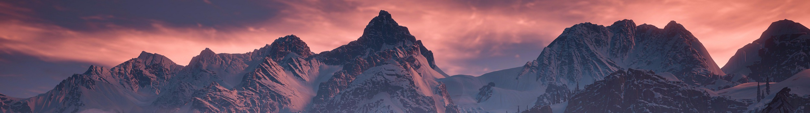
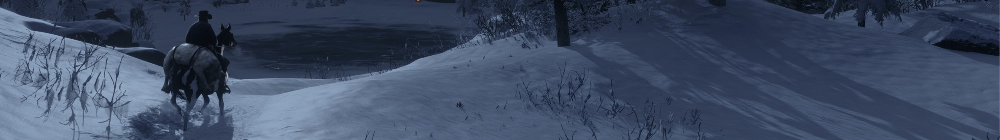

Proces

Proces

Proces
Procesul de creare a jocurilor video include:
Aici începe fiecare proiect. În esență, pre-producția definește despre ce este vorba în joc, de ce ar trebui să fie realizat și de ce va fi nevoie pentru a-l realiza. Această etapă poate dura între o săptămână și un an, în funcție de tipul de proiect, resurse și finanțe. De obicei, durează până la 20% din timpul total de producție.
În acest moment, echipa este destul de mică. Poate exista un producător, un programator, și un artist conceptual.
Un producător de jocuri video se ocupă de aspectul financiar al proiectului. Ei gestionează bugetul și dezvoltă strategii de marketing pentru a vinde produsul.
Un artist conceptual stabilește tonul proiectului de la început prin crearea unor schițe. Aceste imagini ajută la formarea jocului, oferind tuturor celor care lucrează la proiect un ghid vizual pentru atmosfera și apariția sa.
Artă conceptuală a orașului Night City din jocul 'Cyberpunk 2077'
Artă conceptuală a unor personaje din 'League of Legends'
Durând între 1-4 ani, producția este etapa în care jocul începe cu adevărat să prindă contur. Povestea este finisată, sunt stabilite regulile de joc, nivelurile și lumile sunt construite, codul este scris etc.
Există o serie de repere de atins pe parcursul procesului de dezvoltare a jocului.
Odată ce jocul este lansat către public, procesul de dezvoltare a jocului continuă, unii membri ai echipei având roul de întreținere a jocului (remedierea erorilor) sau crearea de bonusuri sau conținut descărcabil (DLC). Ceilalți trec la continuarea sau începutul următorului proiect.
De obicei, se mai organizează o ședință pentru a discuta ce a funcționat/nu a funcționat și pentru a determina ce ar putea fi făcut mai bine data viitoare. Toate documentele de proiectare, fișierele și codul sunt finalizate, adunate și stocate, în cazul în care vor fi necesare în viitor.